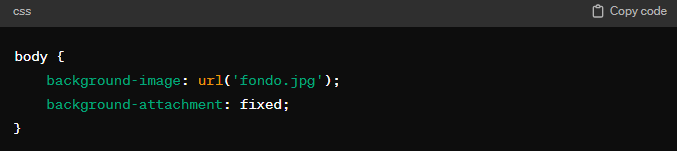
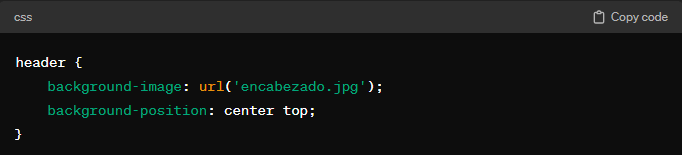

Las propiedades de fondo en CSS permiten estilizar la apariencia visual de los elementos mediante la definición de colores, imágenes y otros estilos para el fondo.
Background-color:
Define el color de fondo de un elemento.
Puedes utilizar nombres de color, valores RGB, valores HEX, etc.
Determina si la imagen de fondo se desplaza con el contenido o permanece fija.
Valores comunes: scroll, fixed.

Background-position:
Especifica la posición inicial de la imagen de fondo.
Puedes utilizar valores como top, bottom, left, right, center, porcentajes o píxeles.

Propiedad Opacity
La propiedad opacity se utiliza para controlar la opacidad de un elemento y su contenido. Un valor de 1.0 significa completamente opaco, y un valor de 0.0 significa completamente transparente.